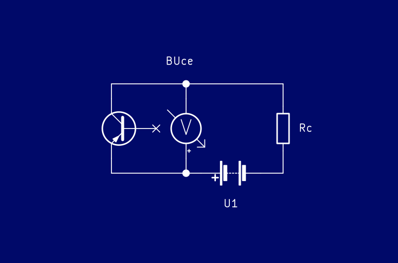
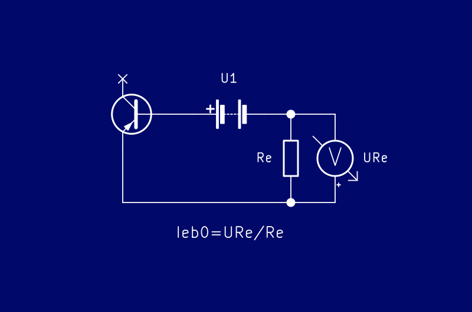
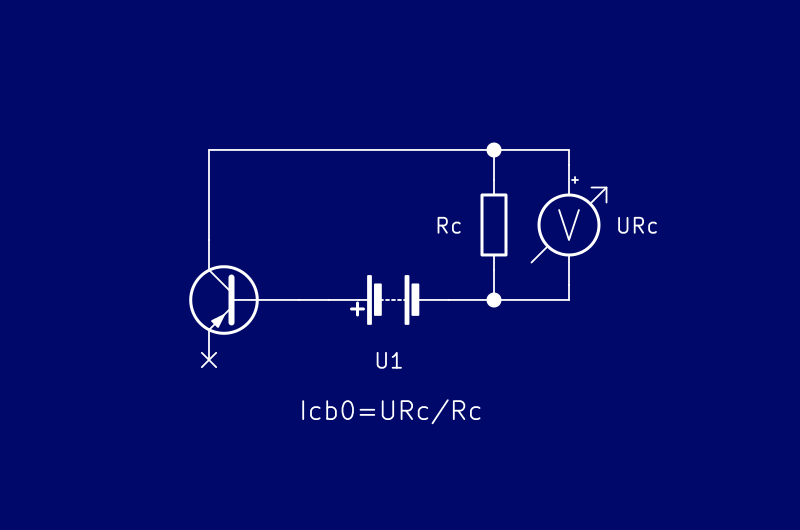
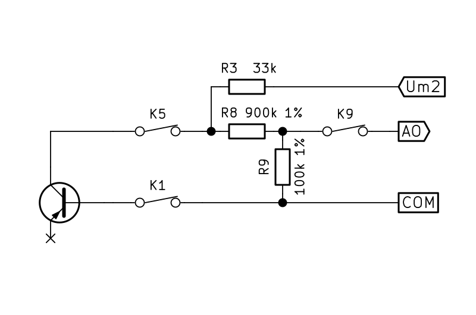
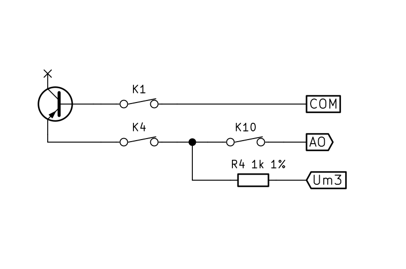
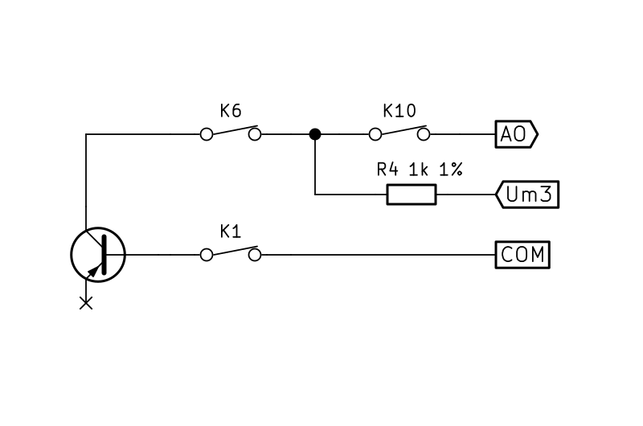
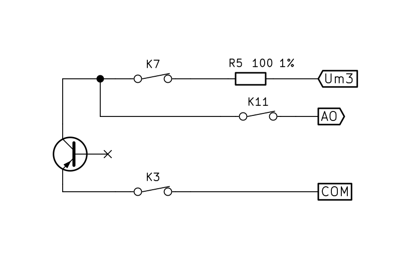
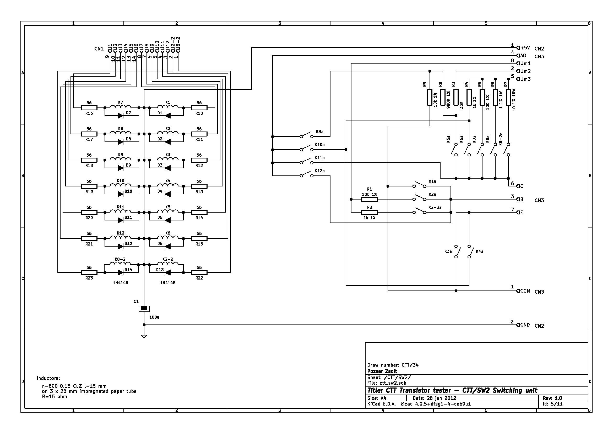
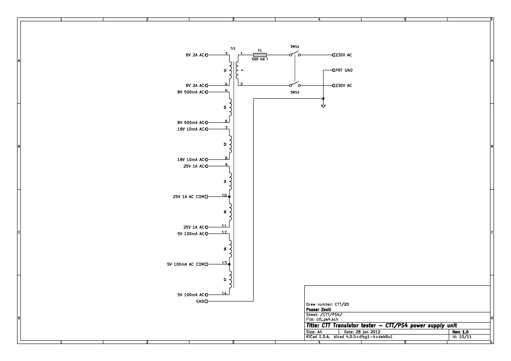

Az eszközről
A CTT egy számítógép által vezérelt teszter és plotter bipoláris tranzisztorokhoz. A készülék a párhuzamos porton keresztül csatlakozik a géphez.
Üzemmódok és feszültségmérés
| M1 üzemmód | BUCB mérés | U< sub>CB=100 V | |
| M2 üzemmód | BUCE mérés | U< sub>CE=0...20 V | |
| M3 üzemmód | IEB0 mérés | U< sub>EB=0...20 V | |
| M4 üzemmód | ICB0 mérés | U< sub>CB=0...20 V | |
| M5 üzemmód | ICE0 mérés | U< sub>CE=0...20 V | |
| M6 üzemmód | IB/UBE karakterisztikus görbe rögzítése | UB=0...1 V | UC=0...20 V |
| M7 üzemmód | IC/UCE jelleggörbe rögzítése | UB=0...1 V | UC=0...20 V |
| M8 üzemmód | párosítás | UB=0...1 V | UC=0...20 V |
Mérési elv
 |
 |  |
| Kollektor-emitter áttörési feszültség mérése | Kollektor-bázis áttörési feszültség mérése | Az emitter-bázis visszáram mérése |
|  |  |
 |
| Kollektor-bázis visszáram mérése | Kollektor-emitter visszáram mérése | Az Ube/Ib vagy Uce/Ic jelleggörbe mérése és ábrázolása |
Megvalósítás
|  |  |
 |
| Kollektor-emitter áttörési feszültség mérése | Kollektor-bázis áttörési feszültség mérése | Az emitter-bázis visszáram mérése |
|  |  |  |
| Kollektor-bázis visszáram mérése | Kollektor-emitter visszáram mérése | Az Ube/Ib vagy Uce/Ic jelleggörbe mérése és ábrázolása |
Megjegyzés: A képeken látható elektronikus alkatrészek a CTT/SW2 egységben találhatók.
Belső felépítés
A készülék tíz egységből áll, amelyek külön nyomtatott áramköri lapon helyezkednek el. Az egységek hagyományos (kötegelt) vezetékezéssel kapcsolódnak egymáshoz és csak néhány nagyobb alkatrész található köztük. A digitális egységek perifériákként működnek, és választóvonalak segítségével olvashatók/írhatók. Lásd az egységek kapcsolási rajzait vagy töltse le az egész dokumentációt a Github-tárolójából.

CTT/IF egység
Az interfész négy beállítható berendezésazonosítóval (EqID), nyolc kiválasztó kimenettel, nyolc bemenettel és nyolc kimenettel rendelkezik és LPT porton keresztül csatlakozik a számítógéphez. A négy bites EqID azonosítja az eszközt, amely a jumperekkel állítható be.
Az I/O művelet előtt a számítógép 3 bites választó címet és 4 bites EqID-t küld, amely az IC2 oktális D típusú flip-flop áramkörben (74LS374) van tárolva. (Engedélyezést fogad a -INIT vonalról). A tárolt és beállított azonosítót a IC3 komparátor (74LS688) hasonlítja össze, és ha van egyezik akkor engedélyezi az IC4 multiplexer áramkört (74LS138). A második engedélyezés az LPT port -STROBE vonalán érkezik. Az azonosító egyezését a számítógép felé az -ERROR vonalon jelzi. Ha a multiplexer engedélyezve van, akkor a megfelelő kiválasztó kimenet aktiválásra kerül, ezután az I/O művelet elvégezhető.
A PC a nyolc bitet két részben olvassa be az IC5 4x2 bemenetű multiplexer áramkör (74LS157) segítségével.
A félbájtos adatok a BUSY, -ACK, SLCT és PE vonalakon kerülnek beolvasásra, az -AUTOFD az alsó és a felső kiválasztására szolgál. A kimenet pufferelve van egy IC1 buszmeghajtó áramkörrel (74LS245) az LPT adapter azonos áramkörének védelmére. A PC az egység felé D0-7 sorokon keresztül egyszerre egy bájtot tud küldeni.

CTT/SW1
Az első kapcsolóegység felelős a második kapcsolóegység vezérléséért. A kapcsolóegységbe egy bájtos adat vihető be a -SL0 kiválasztóvonal segítségével. Az adatok első három bitje határozza meg a működési módot, a negyedik nem használt, az ötödik segítségével válthatunk a Ube/Uce mérés között, a hatodik engedélyezi a kiválasztott mérést. A hetedik segítségével kiválasztható a tranzisztor felépítése (NPN/PNP) és a nyolcadikkal választható a nagyobb áramú mérés a teljesítménytranzisztoroknak.
A beírt bájtot az IC1 oktális D típusú flip-flop áramkör (74LS374) tárolja. Az alsó három bit az IC2 (74LS138) multiplexerhez kerül. A multiplexer O0 és O7 kimenete az alapértelmezett pozíció, ilyenkor nincs mérés, a tesztcsatlakozó feszültségmentes. A többi kimenet hajtja meg a 14 tranzisztoros nyitott kollektoros kimenetet az IC3 (74LS04) invertereken és D1-14 diódákon keresztül. A dióda áramkör biztosítja, hogy a működési módoknak megfelelő kimenetek legyenek bekapcsolva, és a bemeneti jelek egymástól el legyenek választva.
Az IC1 O4-6 kimenete a diódákon keresztül a kimeneti tranzisztorokhoz jut. Az O7 kimenet egy tranzisztorral a panelen kívül elhelyezett relét kapcsolja.

CTT/SW2
A második kapcsolóegységet az első kapcsolóegység vezérli. A feladata a mérőfeszültségek és az A/D átalakító egység csatlakoztatása a mérendő tranzisztorhoz. Minden relé Reed-relé, az R10-R23 ellenállások a tekercsek áramát korlátozzák.
D1-D14 diódák elnyomják a fordított polaritású feszültségcsúcsokat, amikor a relé kikapcsol.
A mérőkör független a készülék testjétől.

CTT/AD
Az A/D konverter egység a mérőáramkör feszültségeit méri.
A a mérés az -SL5 választóvonal aktiválásával kezdődik. Emiatt a az IC2 D-típusú flip-flop áramkör (74LS74) átbillen és elindul mérési ciklus. A mérés végét az A/D konverter STATUS kimenete jelzi, ami alaphelyzetbe állítja a flip-flopot és a konverter HOLD állapotba kerül.
Az IC1 A/D konverter (ICL7109) 12 bites, így a kimeneti adat két bájtos lesz. A kimeneti adatok az IC3 és IC4 buszmeghajtó áramkörökön (74LS245) keresztül kerülnek az adatbuszra. A mért érték alsó bájtja az -SL3, a felső -SL4 bájt használatával olvasható ki. A hatodik bit jelzi a mért feszültség polaritását, a hetedik a túlcsordulást, a nyolcadik a mérés állapotát. A negyedik bit mindig 0.

CTT/DP
A kijelző egység az előlapon lévő LED-ekkel mutatja a készülék állapotát. Az -SL0 kiválasztó vonal aktiválásával egy bájtnyi adatot lehet a kapcsolóegységgel egy időben az egységbe írni. Az adat első három bitje határozza meg az üzemmódot, a negyedik nem használt, a hetedik a tranzisztor felépítését jelzi, a nyolcadik pedig teljesítménytranzisztorok mérésére szolgál.
A bemeneti bájt az IC1-ben van tárolva, amely egy oktális D-típusú flip-flop áramkör (74LS374). Az alsó három bit megy IC2 (74LS138) multiplexerre. A multiplexer O0-O7 kimenetei az Üzemmód LED-ekre vannak kötve.
Az IC1 O6 kimenete csatlakozik a sárga NPN LED és tranzisztoros inverteren keresztül a sárga PNP LED-hez. O7 kimenet kapcsolja a nagyáramú mérés LED-jét.

CTT/SC
Az állapotgyűjtő egység feladata, hogy négy digitális állapotot továbbítson a vezérlőegység felé.
Ha az -SL1 választóvonal aktiválva van, az IC1 buszmeghajtó áramkör (74LS244) átviszi bemeneteinek állapotát az adatvonalra, amelynek felső négy bitje mindig 0.
Ez az egység jelenleg nincs használatban.

CTT/PS1
Az egység feladata a digitális áramköri egységek stabilizált egyenfeszültséggel történő ellátása: +5 V 2 A és -5 V 500 mA, valamint a testfüggetlen Um2 feszültség előállítása, ami kb. 100 V. Ez az egység tartalmazza a polaritásváltó relé meghajtó tranzisztorait. Ez a relé az egységek között található.

CTT/PS2 és CTT/PS3
Mindkét tápegység testfüggetlen, átkapcsolható polaritású mérőfeszültséget állít elő. A CTT/PS2 kimeneti feszültsége 20 V 1,5 A, a CTT/PS3-é pedig 1 V 100 mA. A kimeneti feszültség 256 lépésben állítható. A kimenetek túláramvédelemmel rendelkeznek.
A tápegység az LM317 feszültségszabályozó két altípusán alapul. Az integrált áramkör kimeneti feszültsége könnyen állítható, termikus és rövidzárvédett kimenettel rendelkezik.
A transzformátor szekunder feszültsége kétutas egyenirányítás után a pufferkondenzátorokra jut. A pozitív feszültséget a szabályozó áramkör (IC1), a negatív feszültség a Zener dióda szabályozza, az utóbbi az előfeszültséget biztosítja. A 0V-os kimeneti feszültséget a trimmer potenciométerrel (P1) kell beállítani.
Az -SL7 vagy -SL6 kiválasztóvonalak aktiválásával egy bájt adat vihető be ebbe az egységbe. A bemenet bájt IC2 oktális D-típusú flip-flop áramkörben (74LS374) van tárolva. Az adat azonnal megjelenik a tároló kimenetén, és bekapcsolja a K2-9 PCB reléket T1-8 tranzisztorok segítségével. A relék érintkezője megváltoztatja a feszültségszabályozó ellenálláslétrájának értékét, ezért a kimenet a feszültség is változik.


CTT/PS4
Az egység feladata a többi tápegység váltakozó árammal való ellátása. Tartalmaz egy nagy teljesítményű hálózati transzformátort és a primer áramköri alkatrészeket. A transzformátor toroid alakú, és öt szekunder tekerccsel rendelkezik: 8 V 2 A; 8V 500mA; 18 V 10 mA; 2x25V 1A; 2x5V 100mA.

Vissza a tartalomhoz